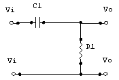
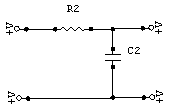

Núcleo Maracay
Dpto. de Ingeniería Electrónica
IX Término, 03-2004
Prof. Isabel Vera
Secciones A y B Comunicaciones
TEMA 1: Respuesta frecuencial de amplificadores electrónicos:
Vivimos rodeados de señales electromagnéticas que transmiten información de interés para unos u otros. Esas señales deben ser amplificadas previamente para poder ser interpretadas. Tal es el caso de las señales de audio y video (radio, televisión). Es por ello que se presenta la necesidad de contar con amplificadores para tales señales.
Pero, una vez conocidos los amplificadores, debemos tomar en cuenta que la respuesta de estos elementos ante la presencia de señales de diferentes formas (senoidales y no senoidales) no es la misma y que su comportamiento varía en función de la frecuencia de tal señal de entrada. Por lo tanto nuestra primera conclusión es:
La ganancia “A” de un amplificador es un número complejo cuya magnitud y fase dependen de la frecuencia de la señal de entrada.
Hasta ahora hemos considerado a los amplificadores en su región de “frecuencias medias” en donde la amplificación es casi constante “A0”. A partir de ahora asumiremos que dicha ganancia (en esa región) es igual a la unidad: A0= 1.
Consideremos ahora el siguiente circuito:

CIRCUITO1= AMPLIFICADOR PASA-ALTOHaciendo un pequeño análisis gráfico nos damos cuenta que se trata de un circuito pasa-alto: A bajas frecuencias no obtenemos señal de salida (Vo); a altas frecuencias la salida es equivalente a la entrada (Vo=Vi)
Al despejar su función de transferencia encontramos:
sabiendo que:
entonces podemos decir:
donde FRECUENCIA INFERIOR DE CORTE
el módulo de ;
y la fase será
Cuando la frecuencia en estudio es igual a la Frecuencia Inferior de Corte obtenemos que el módulo de la función de ganancia es igual a y si
Observemos que a la Frecuencia Inferior de Corte la impedancia capacitiva es igual a la Resistencia equivalente:
De manera equivalente al estudio hecho hasta ahora, veremos el comportamiento del siguiente circuito:

CIRCUITO2= AMPLIFICADOR PASA-BAJOComprobamos facilmente que se trata de un circuito pasa-bajo.
Su función de transferencia es:
es decir, que:
; si decimos que FRECUENCIA SUPERIOR DE CORTE
entonces:
y el módulo de ;
y la fase será
Cuando la frecuencia en estudio es igual a la Frecuencia Superior de Corte obtenemos que el módulo de la función de ganancia es igual a y si
Observemos que a la Frecuencia Superior de Corte la impedancia capacitiva es igual a la Resistencia equivalente:
Hasta ahora ya conocemos las frecuencias de corte Superior e Inferior. Pues bien, ahora representaremos el comportamiento de la ganacia de tensión de los circuitos anteriores en una gráfica, pero el eje de la variable independiente (frecuencia), lo mostraremos en escala logarítmica:
Alexander Graham Bell estableció una relación entre dos niveles de Potencia en una misma impedancia, a la que llamó “Bel”, simbolizada como “G” y que viene dada por:
para aplicaciones prácticas se utiliza el término “decibelio” (dB), definido como:
si a esos valores de Potencia los sustituimos por la potencia disipada por una resistencia R:
obtendremos:
los resultados obtenidos de esta expresión se expresan como “decibelios”.
Si sustituimos en la ecuación anterior los valores que obtiene la función de transferencia de los circuitos en estudio cuando y respectivamente () se tiene que el valor resultante, en decibelios es de -3dB.
Es conocido por sus siglas en inglés BW (BandWidth) y no es más que la diferencia entre la Frecuencia superior de corte y la frecuencia inferior de Corte.
Más allá del concepto matemático, podemos decir que el ancho de banda es el rango de frecuencia en el cual el comportamiento de un amplificador se mantiene en un valor relativamente constante y máximo y sus límites están cercados por aquellas frecuencias donde ese valor constante de ganancia decae en 3 dB.
Recordemos nuevamente nuestro objetivo: Reproducir una señal de entrada de un circuito a su salida, lo más fielmente posible (con la misma forma) y amplificada.
Hay ciertos valores que nos “hablan” acerca de la “fidelidad” de un circuito a cierta frecuencia. En otras palabras, hay valores en un circuito que nos indican cuán fiel será reproducida la señal de entrada a la salida.
Hay una forma de onda muy usada en forma práctica que nos permite hacer un estudio tanto en alta como en baja frecuencia a un circuito amplificador como los mostrados en los circuitos 1 y 2 y es la forma de escalón.
De manera general, existe una relación entre la distorsión del extremo anterior del escalón y la respuesta en alta frecuencia, así como también entre la respuesta en baja frecuencia y la distorsión en la parte plana de dicho escalón.
Consideremos primeramente el comportamiento del CIRCUITO2 ante cambios bruscos de tensión (equivalente a señales de alta frecuencia) ayudándonos de la forma de onda de escalón. Tenemos que:
Definiremos Tiempo de Subida (TR) (Raise Time) como el tiempo que transcurre desde que la señal alcanza el 10% de su valor final hasta que alcanza el 90% de su valor final.
Sustituyendo en la ecuación anterior los valores extremos de tiempo que hemos determinado, se obtiene que
usando la expresión de y sustituyéndola en la expresión de TR obtenemos:
lo que nos dice que estos valores (tiempo de subida y frecuencia superior de corte) son inversamente proporcionales.
Ahora estudiaremos el comportamiento del CIRCUITO1 ante una señal “continua” durante un intervalo de tiempo t1 (que estimaremos muy pequeño). Para ello nos remitiremos a la parta plana de la señal escalón. La ecuación que describe este comportamiento es:
para valores de t mucho menores que R1C1, podemos decir que:
Ahora definiremos Pendiente (P) como el valor porcentual de variación de la señal de salida en un tiempo t1
Nos interesa que tanto el valor de tiempo de subida como el valor de Pendiente, sean lo suficientemente pequeños como para poder darnos a la salida la mejor y más fiel reproducción de la señal de entrada (señal escalón).